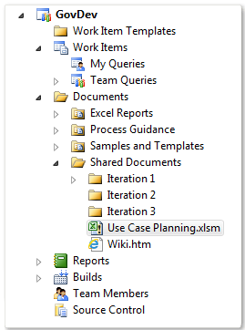
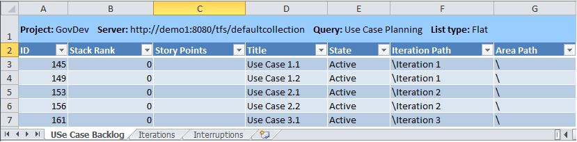
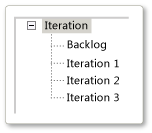
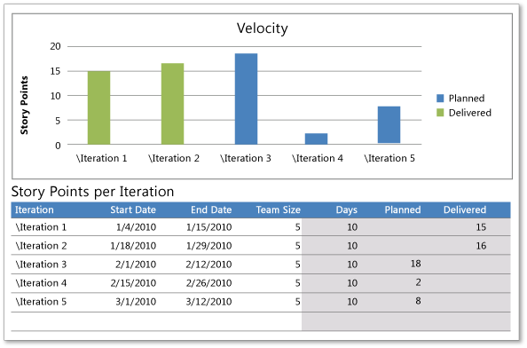
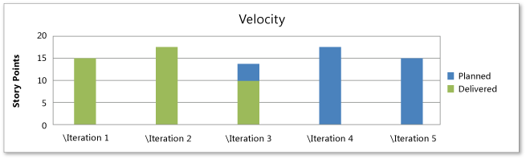

You can use the Use Case Planning workbook to manage the backlog and development of use cases, determine the team velocity, and balance the workload across several iterations, also known as sprints. To plan an iteration, you review, rank, prioritize, and assign story points to the use cases that will be implemented for a project. To balance workload, you assign each use case to a specific iteration and adjust these assignments until the number of story points that are assigned across all iterations are roughly equal.
|
|
|---|
|
The Use Case Planning workbook is stored on the server that hosts SharePoint Products for your team project. If a project portal has not been enabled for your team project, you cannot access the workbook. For more information, see Access a Team Project Portal and Process Guidance. Also, when you open the workbook for the first time, you must enable macros by clicking Options next to the Security Warning. To modify the contents, you must click Edit Workbook next to Server Workbook. For more information, see Workbooks (GovDev). If your team project was created before the release of Visual Studio Application Lifecycle Management (ALM), you must perform upgrade tasks so that you can use the Use Case Backlog workbook with your team project. For more information, see Adding Workbooks to Team Projects. |
|
In this topic |
Open the Use Case Planning workbook from the Shared Documents folder in Team Explorer  |
Required Permissions
To create or modify Use Cases by using the workbook, you must be a member of the Contributors group or your View work items in this node and Edit work items in this node permissions must be set to Allow.
To add iterations or change the project structure, you must be a member of the Project Administrators group or your Create and order child nodes, Delete this node, and Edit this node permissions must be set to Allow.
For more information, see Team Foundation Server Permissions.
 Managing
the Use Case Backlog
Managing
the Use Case Backlog
You can use the Use Case Planning workbook to balance workload across several iterations. This workbook provides three worksheets as the following illustration shows and as described later in this topic.
-
Use Case Backlog: You use this worksheet to filter, rank, and prioritize the use cases that you want to manage. You can specify story points and assign use cases to iterations.
The Use Case Backlog worksheet references the Use Case Planning team query, which finds all Use Cases that are defined for the team project. Within the workbook, you can filter the use cases based on product area. In addition, you can perform the following actions:
-
Iteration Planning: You use this worksheet to schedule the iterations, review the workload for each iteration, and determine how to balance the workload across the iterations.
-
Interruptions: You use this worksheet to specify holidays or other dates when the team will perform no work.
Ranking
and Estimating Use Cases
After you create the initial set of use cases in the backlog, the team estimates the size of each use case, and then you rank them to determine the order in which the team will implement them. Typically, you start the process by ranking each use case, the team then estimates the size of each use case, and then you rank the use cases again based on the team's planning point estimates.
Story points measure the amount and complexity of the work that each use case requires compared to all other use cases in the backlog. Teams should try not to be overly precise with these estimates. They serve only to help identify appropriate tradeoffs when teams determine each use case's rank, which indicates how important the use case is compared to the other use cases in the backlog. Teams can also specify a high, medium, or low level of risk for each use case to indicate a relative level of uncertainty about the use case's requirements or design.
To rank and estimate Use Cases
-
In the Use Case Planning workbook, click the Use Case Backlog worksheet.
-
If you have opened a saved workbook, on the Team tab, in the Work Items group, click Refresh.
This step helps make sure that the list of Use Cases contains the most current information.
-
(Optional) To filter the list of use cases based on product area, in the Area list, select the check box next to each product area that you want to include. To define additional area paths, see Defining Additional Iterations later in this topic.
-
Review the values for rank and story points for each use case, and update the fields in the following table as needed:
Field Name
Description
Stack Rank
A subjective rating of the Use Case compared to all other Use Cases in the backlog. A use case that is assigned a lower number should be implemented before a use case that is assigned a higher number.
Story Points
A subjective measure of the size and complexity of the use case. The team assigns story points by considering several factors and estimating how big a use case is compared to other use cases in the backlog.
Risk
A subjective rating of the relative uncertainty as to the successful completion of the use case. Teams can specify the following values:
-
1 - High
-
2 - Medium
-
3 - Low
-
-
On the Team tab, in the Work Items group, click Publish.
 Note
Note
You can use the undo feature in Excel to reverse recent changes that were made to work items before you publish the changes.
For more information, see Publish Work Items in Office Excel.
-
Click
 .
. The workbook is saved to your team project portal site.
Planning
the Iterations
Planning iterations is an iterative process in which you perform the following steps:
-
(Optional) Defining Additional Iterations
Defining Additional Iterations
Before you can assign Use Cases to iterations, you will want all the iterations to be defined for your team project. The following illustration shows the default iteration structure that is defined in the process template for MSF for Agile Software Development v5.0.
You can rename the iterations, add iterations, and change the tree hierarchy of the iterations.
You can modify the product area and iteration structure by using Team Web Access, Team Explorer, Office Excel, or Office Project. The following procedure describes how to add iterations from Office Excel. For more information, see Create and Modify Areas and Iterations.
To add iterations to your team project from Office Excel
-
In the Use Case Planning workbook, on the Team tab, in the Work Items group, click Edit Areas and Iterations .
The Areas and Iterations dialog box opens.
-
Click the Iteration tab, and perform one or both of the following steps:
-
To add an iteration, click the parent node, click the Add a child node button on the toolbar, type a name for the new iteration, and then press ENTER.
-
To promote a node, demote a node, or move a node up or down in the list, click the node, and then click the appropriate button on the toolbar.
-
-
Click Close.
Scheduling Iterations
To schedule the iterations, you add each iteration to the Iteration Planning worksheet and specify its start and end dates. This step provides the necessary data to balance the use cases across the iterations.
To schedule the iterations
-
In the Use Case Planning workbook, click the Iterations worksheet.
-
(Optional) To filter the use cases, click the down arrow in the cell next to Area, and then click the product area that you want to include.
-
For each iteration in your planning, perform the following actions in the table area under Story Points per Iteration:
-
Click the cell under Iteration, click the down arrow, and then click the iteration that you want to include.
-
Click the cell under Start Date, and type the calendar date for the start of the iteration.
The date format should be month/day/year.
-
Click the cell under End Date, and type the calendar date for the end of the iteration.
The date format should be month/day/year.
-
Click the cell under Team Size, and type the number of team members who will work on the iteration.
The worksheet automatically calculates the following columns:
-
The Days column is calculated based on the start and end dates.
-
The Planned and Delivered columns are calculated from the Use Case Backlog worksheet. The story points for Use Cases that have been resolved or closed are counted as having been Delivered . Only those story points that are assigned to active Use Cases are counted as Planned.
As you complete each row for each iteration, a bar appears in the Velocity chart to indicate the story points that are assigned to each iteration.
-
Accounting for Holidays and Planned Interruptions
You use the Interruptions worksheet to specify days when the team will perform little or no work, such as holidays or team events. The number of days in each iteration is updated in the Iteration Planning worksheet to reflect these interruptions.
To account for holidays or planned work interruptions
-
In the Use Case Planning workbook, click the Interruptions worksheet.
-
Click the cell under Description, and type the name of the holiday or reason for the work interruption.
-
Click the cell under Date, and type the date for the holiday or work interruption.
-
Add as many dates to the worksheet that fall within the planned iterations.
Balancing the Workload Across Sprints
By assigning each use case to an iteration, you add work to that iteration. Typically, the higher ranked use cases are implemented first. However, to balance workload across multiple iterations, you might need to make iterative adjustments to the iteration assignments.
Initially, you might divide the number of use cases to be implemented by the number of iterations that you have planned. This strategy can provide a baseline for starting your assignment of use cases to iterations.
Before you balance the use cases across the iterations, make sure that the following steps have been completed:
-
Each yse case has been assigned story points. Also, a best practice is to have Use Cases of similar point size.
-
Use cases have been ranked, and the Use Case Backlog worksheet is sorted by rank.
-
The iterations to be planned have been added to the Iterations worksheet.
-
Time off for the team has been accounted for on the Interruptions worksheet.
To balance the workload across iterations
-
In the Use Case Backlog worksheet, do a first pass of specifying the iteration for each use case by clicking the down arrow next to Iteration and then clicking the iteration.
-
In the Iterations worksheet, view the story points that are assigned to each iteration. If the story points are not evenly distributed across the iterations, such as the following illustration shows, adjust the iteration assignment until the iterations are balanced.
 -
Determine how many story points that you must move from one iteration to another.
Note
If the team size does not remain constant across iterations, you will want to factor these differences into your planning.
-
In the Use Case Backlog worksheet, change the iteration assignments until the number of story points is roughly even across all iterations.
The following illustration shows work that has been balanced across five iterations.
 -
Click
. The workbook is saved to your team project portal site.
Reviewing
Team Velocity
Your team's velocity is the number of story points that it can complete in an iteration. After several iterations have been completed, you can review the team velocity by viewing the Iterations worksheet. As shown in the following illustration, the team velocity is 15 story points for Iteration 1 and 16 story points for Iteration 2.
By continuing to track story points across iterations, you can better forecast upcoming iterations. For more information, see Scrum .
Adding
Use Cases to the Use Case Backlog
You can define use cases by adding them to the Use Case Backlog workbook and publishing it to the database for tracking work item. Even when the project is underway, the team might continue to create, estimate, and rank Use Cases.
To add Use Cases to the database for tracking work items
-
In Office Excel, open the Use Case Planning workbook.
-
If you have opened a saved workbook, on the Team tab, in the Work Items group, click Refresh.
This step helps make sure that the list of Use Cases has the most current information.
-
For each use case that you want to add, click the row at the bottom of the list, and specify the following information:
-
In Title, type an entry that identifies the customer as specifically as possible and describes the customer's goal at a high level.
For example, you could specify "As a <type of customer>, I want to <perform this operation>”. For more information, see Creating a Great Project Backlog.
-
In the Work Item Type list, click Use Case .
Note
Before you can publish a work item, you must specify the type of work item that you want to publish.
-
-
(Optional) To show additional Team Foundation fields in the list of work items, on the Team tab, in the Work Items group, click Choose Columns.
For more information, see Add or Remove Columns in a Work Item List.
-
Add information to the remaining fields as appropriate.
For more information about each field, see Use Case (GovDev).
-
(Optional) Save the workbook.
-
On the Team tab, in the Work Items group, click Publish.
Reordering
the List of Use Cases
You can reorder the use cases in the Use Case Planning workbook by using the Excel feature for sorting rows.
To reorder the list of Use Cases in the workbook
-
To reorder the Use Cases, perform one of the following actions:
-
Click the down arrow next to Stack Rank, and then click the sort option that you want.
-
Click the down arrow next to Story Points, and then click the sort option that you want.
-
-
(Optional) Save the workbook.
Additional
Resources for Managing the Backlog
For more information about how to modify Use Cases by using Office Excel, see the following topics: